AI Academy · Level 1 · Grade 6 · Week 20 · Student lesson
Recommendations
Learn to understand, design, build, test and explain AI systems responsibly.
Project: Helpful Classroom Sorter
Before you start
Week 19: recommendations depend on selected preferences.
Plan time to read, investigate and explain. Keep predictions separate from observations.
Student lesson · 1 of 18
Your mission
Start with the target: Apply eligibility requirements before ranking candidates by preferences. Try the recall before opening notes.
Your learning target
I can apply eligibility requirements before ranking candidates by preferences.
I can explain a recommendation using its actual scoring rule and limits.
I can interpret feedback in the context of what was shown and distinguish clicks from satisfaction.
Remember before reading
Close your notes first. A rough first answer helps us choose the right starting point; it is not a score for your ability.
Without opening the old lesson, explain one key idea from Similarity. Give an example and a mistake that the idea helps you avoid.
Without opening the old lesson, explain one key idea from Prediction Is Not Fact. Give an example and a mistake that the idea helps you avoid.
Without opening the old lesson, explain one key idea from Build a Human Classifier. Give an example and a mistake that the idea helps you avoid.
After trying, check the relevant lesson or ask your teacher. Change the part of your explanation that the evidence shows was wrong.
A recommender ranks possibilities using goals, information, and tradeoffs.
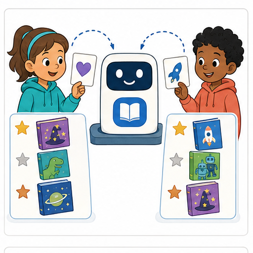
Your target
LEARNING TARGET A system shows only adventure books and records only adventure clicks. It concludes the reader dislikes poetry. Explain the missing evidence and propose a small test.
Learner name:
Readiness for the connected explanation
A book has the highest similarity score but is in a language the reader cannot use. Should the score override the language requirement? Explain.
This week’s end goal
By the end, I can filter requirements before ranking preferences and avoid overinterpreting clicks.
Student lesson · 2 of 18
Notice the evidence
Investigate the supplied Recommendations case. Separate observations, given facts and assumptions before choosing an explanation.
PICTURE STORY
Look Closely Before You Explain
Pictures give clues; evidence tells us what the clues mean.

Start with this puzzle
MYSTERY Two readers can receive different book rankings because their goals, reading level, interests, and novelty preferences differ.
What do you notice?
Name three visible details without explaining them yet.
Circle the detail most connected to the system's decision.
Name one detail that may be decoration or distraction.
Make a first prediction and state the clue that supports it.
My observations, prediction, and evidence:
Thinking habit
GOOD THINKING A prediction can change when stronger evidence appears.
A closer explanation
A recommendation suggests an option for a particular purpose. Start with requirements: conditions every suggested item must meet. Then use preferences to rank the eligible options.
An item that fails a requirement cannot make up for it by collecting more preference points.
A fictional reader needs an available English book. The reader prefers topic space and format comic. BookRec1 gives eligible books 2 points for space and 1 for comic; a known mismatch gives 0.
It returns every eligible book tied for the highest score. If none are eligible, it reports no eligible option rather than ignoring a requirement.
The candidates are J: space, prose, English, available; K: animals, comic, English, available; L: space, comic, Spanish, available; M: space, comic, English, unavailable. These are invented records.
The purpose is to trace a recommendation, not to infer anything about real students or collect their personal preferences.
Student lesson · 3 of 18
See how it works
Follow the mechanism for Recommendations. Connect each labelled input, deciding step and result.
VISUAL MECHANISM
Input → Process → Output
Follow the information instead of imagining magic inside the machine.
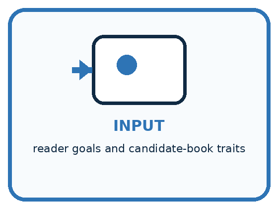
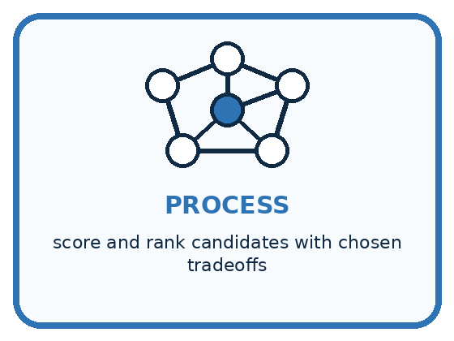
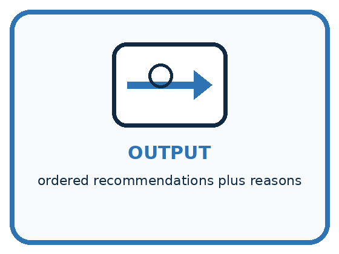
INPUT reader goals and candidate-book traits
PROCESS score and rank candidates with chosen tradeoffs
OUTPUT ordered recommendations plus reasons
Key idea
CORE IDEA A recommender ranks possibilities using goals, information, and tradeoffs.
How the mechanism works
UNDER THE HOOD Recommendation is ranking, not merely classification. An objective combines relevance signals and constraints; tradeoffs may include familiarity, diversity, novelty, safety, and availability.
The top score reflects the objective, not universal quality.
Draw a fresh example with all three stages:
A closer explanation
Requirements come before preference scores
J passes both requirements and scores 2. K passes and scores 1. L fails the English requirement; M fails availability. Do not place L or M above J because they would earn 3 preference points.
They are excluded before the eligible scores are compared.
A faithful explanation says J is available in English and has the highest eligible score because its space topic matches the stated preference. It should also mention that J is prose, not comic.
Claiming that the system knows the reader will love J would go beyond the computation and the evidence.
Connect the picture and the explanation
Point to the input, the deciding step and the result in this week’s visual. Explain the same step in ordinary words. A picture helps when you can say what each part represents.
Student lesson · 4 of 18
Compare the cases
Compare the supplied cases for Recommendations. Identify the detail that changes the conclusion.
PICTURE GALLERY
Four Cases, Four Clues
Use the visual cue, then read the evidence carefully.
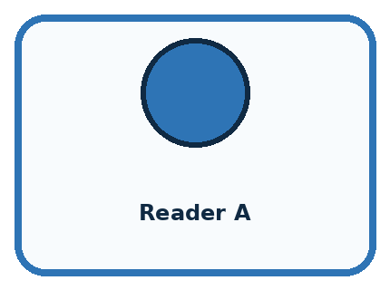
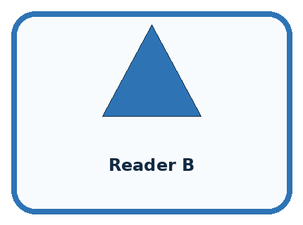
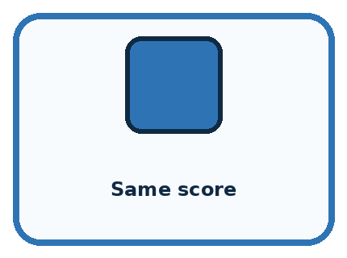
The case to investigate
CASE 1 — Reader A Clue: likes survival and long books. Meaning: rank adventure higher.
The case to investigate
CASE 2 — Reader B Clue: wants short humor. Meaning: rank comedy higher.
The case to investigate
CASE 3 — Same score Clue: two books tie. Meaning: need tie policy.
The case to investigate
CASE 4 — Unavailable book Clue: high relevance but unusable. Meaning: constraint changes rank.
Keep this boundary clear
BOUNDARY A recommendation optimizes chosen goals and data; it does not discover what a person truly wants.
Which two pictures are easiest to confuse? What evidence separates them?
Change one thing in the pictured case
Change one thing
Change: Change the maximum time to 10 minutes.
Predicted result
Prediction: Only C remains eligible and is recommended.
Why the result follows
Reason: B takes 12 minutes; A is still noisy.
Student lesson · 5 of 18
Words that unlock the idea
Use the vocabulary of Recommendations to explain a concrete decision, rather than only memorising definitions.
VOCABULARY
Words You Can See and Use
The badge is a memory cue; the definition does the real thinking work.
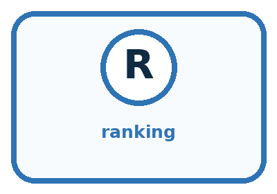
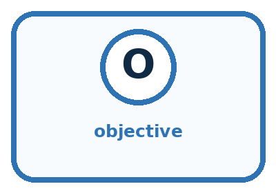
| Word | Meaning | My example |
|---|---|---|
| ranking | ordered list from higher to lower priority | |
| objective | goal the scoring process tries to satisfy | |
| tradeoff | gain in one goal that may reduce another | |
| diversity | meaningful variety among recommended options |
Misconception detective
Find the unsupported claim
CLAIM TO REPAIR The highest-ranked item is best for everyone.
Use one vocabulary word and one piece of evidence to repair it:
WORD POWER A strong definition helps you decide something in a new case.
Words used in the closer explanation
| Word | Meaning |
|---|---|
| Eligibility | Whether an item meets the requirements for consideration |
| Preference | A desired feature used to rank eligible choices |
| Recommendation | A suggested option produced under a stated process |
| Exposure | An opportunity for a person to see an item |
| Feedback loop | A process in which earlier recommendations influence the feedback used for later recommendations |
Student lesson · 6 of 18
Follow a worked example
Follow the worked trace for Recommendations, predict a step, then compare with its explanation.
WORKED EXAMPLE
Watch the Reasoning, Not Just the Answer
Every step connects a claim to observable evidence.

The case to investigate
CASE Two readers can receive different book rankings because their goals, reading level, interests, and novelty preferences differ.
Step 1
STEP 1 — OBSERVE reader goals and candidate-book traits
Step 2
STEP 2 — TRACE score and rank candidates with chosen tradeoffs
Step 3
STEP 3 — CONCLUDE ordered recommendations plus reasons
Model answer
MODEL REASONING Use the same transparent scoring method with each reader's stated preferences. Different inputs create different totals. Report tradeoffs, ties, and one option outside the top rank to preserve choice.
A claim to avoid
DO NOT OVERCLAIM A recommendation optimizes chosen goals and data; it does not discover what a person truly wants.
What new evidence could change this answer?
A closer explanation
| Recorded event | What it establishes | What it does not establish |
|---|---|---|
| J was shown | There was a recorded exposure | The reader noticed or liked it |
| J was clicked | A recorded interaction occurred | The reader enjoyed the book |
| Reader said J was too long | A stated reason in this context | All space books are unwanted |
| K was never shown | No exposure recorded for K | The reader rejected K |
Worked explanation · Recommendations
A click can reflect interest, curiosity or a mistaken tap. No click can reflect a missed display, lack of time or a decision not to choose it. Preserve the observed event separately from any interpretation.
More direct feedback may clarify a reason, but one response still describes one person and occasion.
Useful feedback records name the item, what was shown, the system version, the event and any stated reason. Use only information needed for the task.
Our paper exercises use invented feedback; they do not require accounts or recording classmates’ browsing behaviour.
Learn from the worked case
Cover the result before checking it. Say what is given, choose the procedure, and follow one step at a time. Then uncover the result and explain your first mismatch. Ask why a step is allowed, not only what number it produces.
A pictorial worked case: Recommendations
A fictional classroom break chooser recommends a suitable paper activity.
The facts we will use
Supplied facts
Must be quiet and take at most 12 minutes. Score 2 for puzzles and 1 for solo.
Supplied facts
A puzzle,solo,noisy,8 min; B puzzle,group,quiet,12 min; C drawing,solo,quiet,10 min.


Read the picture one step at a time
Why this result follows
Why the result follows
A hard requirement determines whether an option can be chosen at all. Preferences rank the eligible options. The apparent best preference match, A, is not suitable under the quiet requirement.
If a learner clicks C instead, the event alone does not tell us whether they disliked B, misclicked or wanted variety.
What this example does not establish
Keep the stated limit
One click is an observed event, not proof of satisfaction or a stable personal preference.
Keep the stated limit
Read the labelled picture: Why does the recommendation change without changing anyone’s preferences?
Keep the stated limit
Change one thing: Change the maximum time to 10 minutes. Predict the result before checking the explanation. What remains the same?
Student lesson · 7 of 18
Find and repair a mistake
Find the unsupported step in the Recommendations claim and explain a repair using the supplied evidence.
COMPARE
Same Result, Different Reason
A comparison helps reveal the true concept boundary.
| Case | Evidence | What it shows |
|---|---|---|
| Reader A | likes survival and long books | rank adventure higher |
| Reader B | wants short humor | rank comedy higher |
| Same score | two books tie | need tie policy |
| Unavailable book | high relevance but unusable | constraint changes rank |
Repair two tempting claims
Challenge claim A
CLAIM A The highest-ranked item is best for everyone.
Repair:
Challenge claim B
CLAIM B Personalization removes the need for user choice.
Repair:
A frame for explaining
STRONG ANSWER FRAME I claim ______ because the evidence shows ______. The process is ______. One limit is ______.
A closer explanation
Check the claim against the facts
If feedback says J is too long, length may be a relevant missing feature. Ask what limit matters before adding a requirement.
Do not automatically remove all space books or silently turn one comment into a permanent preference. Keep the original feedback and document any change to the recommendation rules.
Check the claim against the facts
Check a revised version on reserved paper cases, including ties, no eligible choices and missing required information.
If a required fact is unknown, mark that candidate pending verification and report the limitation; do not assume it passes. If all candidates are pending or excluded, return no verified eligible option.
A recommendation leaves the final choice with the reader.
Student lesson · 8 of 18
Practise together
Practise Recommendations with support, then explain the deciding step in your own words.
GUIDED PRACTICE
Try It, Check It, Explain It
Use support now so you can succeed independently later.

Explain how the picture story demonstrates this idea: A recommender ranks possibilities using goals, information, and tradeoffs.
Use a fresh example to explain ranking.
Trace a new input → process → output example.
Find and repair the error in: Personalization removes the need for user choice.
Invent one edge case and name the safe response.
Check with a partner
PARTNER CHECK Point to the evidence. Do not accept an answer that only repeats the vocabulary word.
A closer explanation
Suppose a system shows only space books, then collects clicks only on those books. If it treats those clicks as proof that space is the only wanted topic, it may keep showing space.
Its choices helped produce the evidence it later uses. The absence of animal-book clicks says little when animal books were never shown.
A better investigation can ask the fictional reader directly or offer a small set of eligible alternatives with clear choice and optional feedback. Record what was offered as well as the response.
Such a comparison still needs care: order, context and missing responses can affect what is observed. Do not call an unseen item rejected.
Practise with less help: Explain a recommendation honestly
Use workbook W2 for the connected example “Recommendations and feedback”. First fill the input and rule boxes. Try the middle steps before asking for a hint. After a hint, try the next step yourself.
| Plan | Do | Check |
|---|---|---|
| What is given? Which rule or procedure applies? | Record each intermediate step. | Does the result follow? What remains unknown? |
Explain your trace to a partner. Your partner points to one step to check. Swap roles on the next case. Each person writes their own explanation.
Check your reasoning
Use the worked case for Recommendations and feedback. Proposed explanation: “A high score can cancel a failed requirement”. Decide whether this explanation is supported.
Point to the step or supplied fact that decides; explain your repair if needed.
Answer on your own before discussion. If you are unsure, say which step you need help with.
Explain the picture
Why does the recommendation change without changing anyone’s preferences?
This is supported practice. Keep the separately named independent case for an attempt before feedback.
Student lesson · 9 of 18
Run the investigation
Investigate Recommendations. Record the prediction, actual observation or labelled paper trace, explanation and next test separately.
EXPLORER LAB
Two-Reader Book Ranker
Predict first, test honestly, and explain what the evidence means.
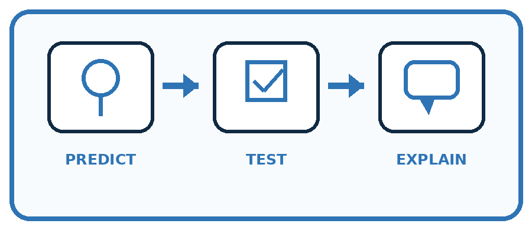
1. Predict
State your prediction before the result is known.
2. Investigate
Complete the task: Score books for two readers; explain why rankings differ.
3. Compare cases
Keep a normal case and an edge case clearly separated.
4. Record honestly
Record what happened—even when it does not match your prediction.
5. Explain and plan the next test
Explain the result, one limitation, and the next useful test.
| Case | Prediction | Observed result | What it means |
|---|---|---|---|
| Normal | |||
| Edge |
Use a fresh case after support
INDEPENDENCE After support is removed, repeat the proof with a fresh case.
Plan → try → check
Before trying: what do I expect, and why? While trying: which step could first go wrong? Afterwards: what did I actually observe, and what should change? Keep “not run” if you only traced the procedure.
Student lesson · 10 of 18
Build your understanding
Move from recall to tracing, diagnosis and transfer in Recommendations. Explain why each step is justified.
PRACTICE LADDER
Climb from Recall to Defense
Each step asks for a stronger kind of understanding.
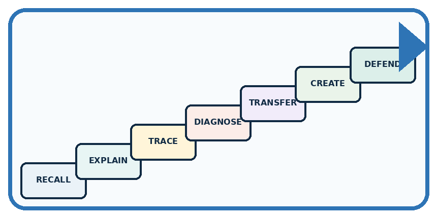
RECALL Define ranking.
EXPLAIN A recommender ranks possibilities using goals, information, and tradeoffs.
TRACE Show the input, process, and output.
DIAGNOSE Repair: The highest-ranked item is best for everyone.
TRANSFER Apply the idea to a new home or classroom case.
CREATE Design one revealing test.
DEFEND Give a claim, evidence, mechanism, limit, and safe action.
When to retry
RETRY RULE A coached answer becomes mastery only after you solve a different case independently.
Student lesson · 11 of 18
Connect your project
Apply this week’s idea to Helpful Classroom Sorter. Keep an annotated decision and the evidence supporting it.
PROJECT
Helpful Classroom Sorter
Build one coherent system across the year, one evidence-based decision at a time.
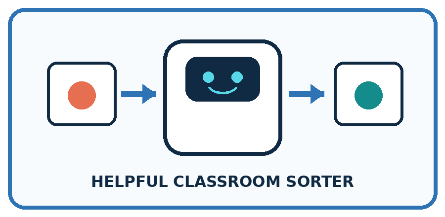
THIS WEEK'S CHECKPOINT If the sorter ranks bins, state the objective and show why the top suggestion is not a command.
What real classroom need does this serve?
What information is necessary—and what should stay private?
What happens inside the process?
What normal and edge cases will you test?
When should it say not sure or ask a person?

Responsible design
RESPONSIBLE DESIGN A recommendation optimizes chosen goals and data; it does not discover what a person truly wants.
My project decision:
Evidence for your project
Separate sorter requirements, preferences and observed feedback; document why a suggestion was eligible.
Student lesson · 12 of 18
Show what you know
Use a genuinely new case for independent evidence. Previously discussed examples remain practice; use the separately named independent case before feedback.
MASTERY
Fresh-Case Independent Proof
Complete this after teaching and guided practice have ended.
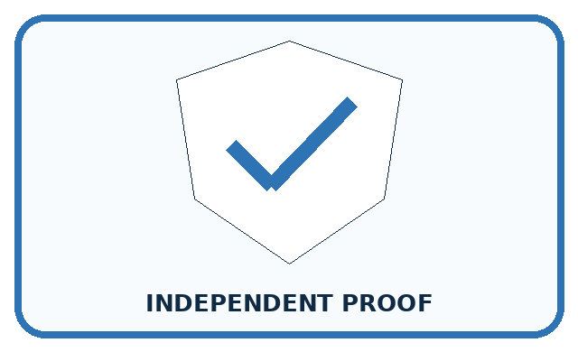
What success looks like
REQUIRED PROOF Score books for two readers, show the arithmetic or rule, and explain why the rankings differ.
□ Name or draw the fresh case.
□ Trace input, process, and output.
□ State the conclusion and strongest evidence.
□ Name one limit, failure, missing clue, or fairness/privacy concern.
□ Explain one safe next action or improvement.
Independent evidence:
Check your explanation
SELF-CHECK Use the same transparent scoring method with each reader's stated preferences. Different inputs create different totals. Report tradeoffs, ties, and one option outside the top rank to preserve choice.
My level: □ Not yet □ With one hint □ Independently □ I can teach it
Connect to the next lesson
NEXT BRIDGE Carry today's evidence habit into: Good Data, Bad Data.
Student lesson · 13 of 18
Study a complete case
Revisit the complete Recommendations case for supported practice. Repeated examples do not become fresh assessments.
Week 20 Worked case
Use the supplied details to practise the weekly concept before attempting the independent question. This case extends the illustrated lesson.
The situation
A recommender suggests adventure books after one adventure-book choice.
The question
Explain its evidence and limitation.
Worked explanation
The past choice supports considering adventure, but does not capture every interest. Ask for feedback and offer variety.
Explain it in your own words
Which detail supports the answer, and why does it matter?
Trace the supplied case visually
Recommendations shape future evidence
| Evidence or stage | Value or result |
|---|---|
| Past choice | One adventure book |
| Suggestion | More adventure |
| Feedback | Ask what the reader liked |
| Next suggestion | Use feedback and offer variety |
A recommender suggests adventure books after one adventure-book choice.
Explain its evidence and limitation.
The past choice supports considering adventure, but does not capture every interest. Ask for feedback and offer variety.
Student lesson · 14 of 18
Try a new case independently
Attempt the reserved new case before feedback. Record support; the earlier examples below remain additional practice.
Independent case: Transfer the process to activities
A fictional learner needs an indoor activity lasting at most 20 minutes. Preferences score 2 for drawing and 1 for solo.
Candidates: A drawing, solo, outdoor, 10 minutes; B drawing, group, indoor, 20 minutes; C music, solo, indoor, 15 minutes; D drawing, group, indoor, 18 minutes. Filter, score and return all highest scorers.
Only B is then shown and selected; C and D are not shown. State what the feedback establishes and what remains unknown.
Attempt this case before feedback. Record any help. Earlier examples below are further practice; a case already practised with feedback cannot establish fresh transfer.
Week 20 Independent application
Close the worked explanation. Apply the idea to this different question without copying.
A recommender suggests a space book because you liked two space books. Does the suggestion prove you will enjoy it? What feedback could help next time?
My answer, with a trace, calculation or supporting evidence
Create and test
Change one relevant detail. Predict the result before testing. Include a boundary or missing-information case when it helps reveal a limit.
My changed input and expected result
Connect to your project
If the sorter ranks bins, state the objective and show why the top suggestion is not a command.
The evidence I will keep
Your teacher has the independent answer and scoring criteria. Complete the matching workbook week to keep your practice evidence together.
Transfer practice from the original programme
A system shows only adventure books and records only adventure clicks. It concludes the reader dislikes poetry. Explain the missing evidence and propose a small test.
Use feedback to improve
Attempt the independent case before hints. Record whether you worked alone, used a hint or followed a model. After feedback, fix the first unsupported step and explain why it changed.
A later check uses a changed case, not a copied answer.
Student lesson · 15 of 18
Your lesson route
Use this map to navigate Recommendations, connect the goals to tasks and keep one evidence record for each attempt.
Start with this question: A fictional classroom break chooser recommends a suitable paper activity.
| By the end, I can | How I will show it |
|---|---|
| Apply eligibility requirements before ranking candidates by preferences | Explain the deciding step, show a trace or test, and state one limit. |
| Explain a recommendation using its actual scoring rule and limits | Explain the deciding step, show a trace or test, and state one limit. |
| Interpret feedback in the context of what was shown and distinguish clicks from satisfaction | Explain the deciding step, show a trace or test, and state one limit. |
Remember → watch and explain → try with help → investigate → try independently → keep project evidence. Your teacher may spread this lesson across several classes.
Keep your first prediction. Compare it with what the evidence shows and explain any change.
Student lesson · 16 of 18
Finish and return
Explain Recommendations without notes, identify a remaining question and plan a later check with a changed case.
Close your notes. Explain this goal in your own words: Apply eligibility requirements before ranking candidates by preferences
If you are unsure, return to the worked picture and explain one arrow. If you are ready, change an input or assumption and justify your prediction.
Save your workbook evidence. At the next review, try a different case before opening your old answer.
Student lesson · 17 of 18
Supported practice, repair and portfolio
Attempt supported questions before using hints or feedback. Review a missing building block, then keep the completed work.
Use this supported practice once, in the browser or on paper. Keep the reserved independent assessment for a separate first attempt before teacher feedback.
A fictional classroom break chooser recommends a suitable paper activity.
Practice 1: explain the deciding evidence
Which labelled step matches this detail? Choose B; preserve the reasons and any later feedback.
1. Recommend
2. Requirements
3. Eligible candidates
4. Preference scores
Hint · try first
Hint if needed: Read the steps in the pictorial case. Match the supplied detail to the stage that performs or records it.
Feedback · compare after trying
After your attempt, compare with the supported explanation: Recommend Choose B; preserve the reasons and any later feedback. A hard requirement determines whether an option can be chosen at all.
Preferences rank the eligible options. The apparent best preference match, A, is not suitable under the quiet requirement.
If a learner clicks C instead, the event alone does not tell us whether they disliked B, misclicked or wanted variety.
Practice 2: explain the deciding evidence
Changed case · predict first
Changed-case practice: Change the maximum time to 10 minutes. Which conclusion is supported by the supplied facts?
1. Only C remains eligible and is recommended.
2. This one example guarantees correct results for every future input.
3. We can decide the result without examining the changed input or the procedure.
Hint · try first
Hint if needed: Use the changed condition and the deciding step in the pictorial trace. The answer must say what follows from those facts.
Feedback · compare after trying
After your attempt, compare with the supported explanation: Only C remains eligible and is recommended. B takes 12 minutes; A is still noisy.
Repair a missing building block
Review Similarity (ai-1/19). Goal: Calculate similarity using explicitly selected features and a stated scoring rule. Short practice: Point to the matches supporting C’s new score and explain why there is no tie..
Return to this week and explain what you changed.
Review Prediction Is Not Fact (ai-1/17). Goal: Separate a recorded prediction from the observation used to check it. Short practice: Which field changes the observation label, and which field changes the model prediction?.
Return to this week and explain what you changed.
Review Build a Human Classifier (ai-1/14). Goal: Construct a classifier with a stated input format, selected rule and recorded output.
Short practice: Trace 0 cm and explain why clarification is different from predicting short.. Return to this week and explain what you changed.
Keep your completed work
Use Download completed work in the hosted lesson to export your answers, reflections, practice feedback and code-run evidence. Open the HTML copy to read or print it.
Drafts stay in this browser when storage is available; clear drafts on a shared device.
Student lesson · 18 of 18
Visual concept journey
Explain each Recommendations graphic using its labels, deciding evidence and relevant limitation.
01. Recommendations: the case

A fictional classroom break chooser recommends a suitable paper activity. Supplied facts: Must be quiet and take at most 12 minutes. Score 2 for puzzles and 1 for solo.
A puzzle,solo,noisy,8 min; B puzzle,group,quiet,12 min; C drawing,solo,quiet,10 min.
Point to the given fact that matters most. Explain why it matters.
02. Follow the deciding steps

Requirements: Reject A because it is noisy despite a preference score of 3. → Eligible candidates: B and C both satisfy time and quiet requirements. → Preference scores: B scores 2; C scores 1. → Recommend: Choose B; preserve the reasons and any later feedback.
Point to each numbered stage and explain which recorded input it uses.
03. Requirements before preferences

Requirements before preferences. A: Quiet = No, Minutes = 8, Score = 3, Status = excluded. B: Quiet = Yes, Minutes = 12, Score = 2, Status = eligible. C: Quiet = Yes, Minutes = 10, Score = 1, Status = eligible.
Read the labels and values. Explain the relationship the model shows.
04. Change one thing. Trace what follows.

Original case: Choose B; preserve the reasons and any later feedback. Changed condition: Change the maximum time to 10 minutes. Expected result: Only C remains eligible and is recommended.
Reason: B takes 12 minutes; A is still noisy.
Predict before checking the worked changed-case result. Name what changed and what the supplied facts allow you to conclude.
05. Connect the explanation to its limit

A hard requirement determines whether an option can be chosen at all. Preferences rank the eligible options. The apparent best preference match, A, is not suitable under the quiet requirement.
If a learner clicks C instead, the event alone does not tell us whether they disliked B, misclicked or wanted variety. Limit: One click is an observed event, not proof of satisfaction or a stable personal preference.
Explain the case, then point to a limit on the claim.
06. Make the idea visible in your project

Separate sorter requirements, preferences and observed feedback; document why a suggestion was eligible. Draw your input, deciding step, result and limit.
Supported question: Why does the recommendation change without changing anyone’s preferences?
Draw your project trace and justify the deciding step using evidence.